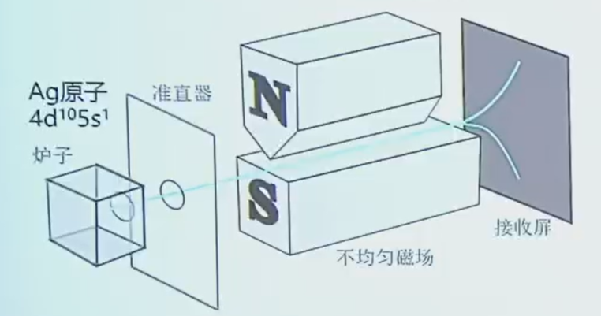
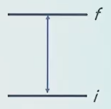

Chapter 2：原子结构和原子光谱¶
2.1 氢原子电子结构¶
2.1.1 类氢原子¶
（类）氢原子：\(\text{H}\)、\(\text{He}^+\)、\(\text{Li}^{2+}\)、\(\dots\)、\(\text{U}^{91+}\)
-
单电子原子
-
量子力学可精确解
原子核和电子分离处理（玻恩-奥本海默近似） 电子相对于原子核的内运动方程： $$ \begin{aligned} \left(-\frac{\hbar^2}{2\mu}\nabla^2 - \frac{Ze^2}{4\pi\varepsilon_0 r}\right)\psi = E\psi \end{aligned} $$
约化质量 $$ \begin{aligned} \frac{1}{\mu} = \frac{1}{m_e} + \frac{1}{m_N} \approx \frac{1}{m_e} \end{aligned} $$
-
\(m_e\)：电子静质量
-
\(m_N\)：原子核质量
2.1.2 求解轨道波函数和能量¶
球坐标下拉普拉斯算符分解： $$ \begin{aligned} \nabla^2 = \frac{1}{r}\frac{\partial^2}{\partial r^2}r + \frac{1}{r^2}\Lambda^2 \end{aligned} $$
角向算符： $$ \begin{aligned} \Lambda^2 = \frac{1}{\sin^2 \theta}\frac{\partial^2}{\partial \phi^2} + \frac{1}{\sin \theta}\frac{\partial}{\partial \theta}\left(\sin \theta \frac{\partial}{\partial \theta}\right) \end{aligned} $$
中心对称势场 波函数分离变量： $$ \begin{aligned} \psi(r,\theta,\phi) = R(r)Y(\theta,\phi) \end{aligned} $$
-
径向(r)：\(\boldsymbol{R(r)}\)
-
角向(θ,φ)：\(\boldsymbol{Y(\theta,\phi)}\)
分离变量后的方程：
-
角向方程 $$ \begin{aligned} \Lambda^2 Y(\theta,\phi) = -l(l+1)Y(\theta,\phi) \end{aligned} $$
-
径向方程 $$ \begin{aligned} u(r) = rR(r) \end{aligned} $$ 径向运动方程： $$ \begin{aligned} -\frac{\hbar^2}{2\mu}\frac{d^2 u(r)}{dr^2} + V_{eff} u(r) = E u(r) \end{aligned} $$ 有效势能： $$ \begin{aligned} V_{eff} = -\frac{Ze^2}{4\pi\varepsilon_0 r} + \frac{l(l+1)\hbar^2}{2\mu r^2} \end{aligned} $$
轨道波函数¶
记为 \(\boldsymbol{|n,l,m_l\rangle}\)
-
\(n\)：主量子数，表征能量量子化 → 壳层
-
\(l\)：角量子数，表征角动量量子化 → 子壳层 取值：\(l=0,1,2,...\ n-1\)
-
\(m_l\)：角动量z分量量子数（磁量子数，取向量子数），表征角动量空间取向量子化 取值：\(m_l =0,\pm1, \pm2,...\ \pm l\)
能级简并度（不考虑自旋）： $$ \begin{aligned} k = \sum_{l=0}^{n-1} (2l + 1) = n^2 \end{aligned} $$
「s 能量低于 p」针对多电子原子。多电子原子存在屏蔽效应和钻穿效应，破坏了纯库仑势的对称性，使能级解除简并。
径向方程的解¶
类氢原子能级 $$ \begin{aligned} E_n = -\frac{\mu Z^2 e^4}{8\varepsilon_0^2 h^2 n^2} \end{aligned} $$
\(n = 1,2,3...\)：主量子数，能量量子化
氢原子（\(\text{H}\): \(Z=1\)） $$ \begin{aligned} E_n = -hcR_H \frac{1}{n^2} \end{aligned} $$
定义里德堡常数 $$ \begin{aligned} R_H = \frac{\mu e^4}{8c\varepsilon_0^2 h^3} = 109667\ \mathrm{cm^{-1}} \end{aligned} $$
单位转换 $$ \begin{aligned} E_n = -13.6 \frac{1}{n^2}\ (\mathrm{eV}) \end{aligned} $$
- 都是负数，束缚态
- 只取决于主量子数\(n\)
角向方程的解¶
氢原子p轨道复波函数（球谐函数本征态）
-
磁量子数 \(m_l=0\)（实函数，对应\(\mathrm{p}_z\)轨道） $$ \begin{aligned} \psi_{n,1,0} = R_{n1}(r) Y_{1,0}(\theta,\phi) = r\cos\theta \cdot f(r) = z \cdot f(r) \end{aligned} $$
-
磁量子数 \(m_l=\pm1\)（复形式波函数） $$ \begin{aligned} \psi_{n,1,\pm1} = R_{n1}(r) Y_{1,\pm1}(\theta,\phi) = \mp \frac{1}{\sqrt{2}} r\sin\theta \mathrm{e}^{\pm\mathrm{i}\phi} \cdot f(r) \end{aligned} $$
本征函数线性组合得到实p轨道
2.1.3 电子自旋与斯特恩-盖拉赫实验*¶
自旋是电子的内禀属性，独立于环境，不依赖 \(r,\theta,\phi\)，纯粹的量子现象 
单电子的角动量与量子数¶
轨道角动量
-
\(|L|=\sqrt{l(l+1)}\hbar\)
-
空间取向（z分量）：\(L_z=m_l \cdot \hbar\)（\(m_l=-l,-l+1,...,0,...,l-1,l\)，共\(2l+1\)个离散值）
自旋角动量
-
\(|S|=\sqrt{s(s+1)}\hbar\)（电子\(s=1/2\)）
-
空间取向（z分量即磁场方向）：\(S_z=m_s \cdot \hbar\)（\(m_s=+1/2\)（自旋向上）、\(m_s=-1/2\)（自旋向下），共2个离散值）
多电子闭壳层的角动量抵消¶
泡利不相容原理：一个原子中，不可能有两个电子拥有完全相同的4个量子数（\(n,l,m_l,m_s\)）。同一轨道（\(n,l,m_l\)确定）最多填2个电子，且自旋相反。
闭壳层：电子子壳层（\(n,l\)确定）的所有\(m_l、m_s\)量子态都被电子填满，如\(ns^2、np^6、nd^{10}\)。
-
全满壳层\(m_l\)总和为0，\(L_{z,总}=0\)，且因球对称，总轨道角动量\(L_{总}=0\)。
-
每个轨道的2个电子自旋相反，\(m_s\)总和为0，总自旋角动量\(S_{总}=0\)。
闭壳层对原子总角动量、总磁矩贡献为0，仅需考虑未填满的价电子层。
银原子电子排布：\(1s^2 2s^2 2p^6 3s^2 3p^6 3d^{10} 4s^2 4p^6 4d^{10} 5s^1\) 最外层5s¹价电子： - 5s轨道\(l=0\)，轨道角动量\(|L|=0\)。 - 仅存在自旋角动量。
结论：银原子总角动量 = 5s电子的自旋角动量。
角动量 → 磁矩¶
轨道磁矩：\(\boldsymbol{\mu}_l = -\frac{e}{2m_e}\boldsymbol{L}\)，5s电子轨道角动量为0，故轨道磁矩\(\boldsymbol{\mu}_l=0\)
自旋磁矩：\(\boldsymbol{\mu}_s = -g_s\frac{e}{2m_e}\boldsymbol{S}\)（\(g_s≈2\)）
磁矩z分量：\(\mu_z = -g_s \cdot m_s \cdot \mu_B\)（\(\mu_B=\frac{e\hbar}{2m_e}\)：玻尔磁子） 代入\(g_s≈2\)，\(m_s=±1/2\)，得\(\mu_z≈±\mu_B\)，仅两个离散取值
磁矩 → 偏转与分裂¶
-
\(\mu_z=+\mu_B\)：受力沿磁场梯度方向（向上）偏转。
-
\(\mu_z=-\mu_B\)：受力沿磁场梯度反方向（向下）偏转。
原子束分裂为两道，在接收屏留下离散痕迹。
2.2 氢原子光谱¶

根据跃迁速率 $$ \begin{aligned} W \propto |\mu_{if}|^2 \end{aligned} $$
-
\(\boldsymbol{\mu_{if} \neq 0}\)，跃迁允许
-
\(\boldsymbol{\mu_{if} = 0}\)，跃迁禁阻
跃迁偶极矩 $$ \begin{aligned} \mu_{if} = \langle i | \hat{\mu} | f \rangle \end{aligned} $$
电偶极矩算符 $$ \begin{aligned} \hat{\mu} = -e\vec{r} \end{aligned} $$
分量形式： $$ \begin{aligned} \mu_x &= -er\sin\theta\cos\phi \ \mu_y &= -er\sin\theta\sin\phi \ \mu_z &= -er\cos\theta \end{aligned} $$
积分形式 $$ \begin{aligned} \mu_{if} = \int \Psi_i(n_i,l_i,m_{l_i},m_{s_i}) \hat{\vec{\mu}} \Psi_f(n_f,l_f,m_{l_f},m_{s_f}) d\tau \end{aligned} $$
投影： $$ \begin{aligned} \mu_{if} = -e \int \Psi_i(n_i,l_i,m_{l_i},m_{s_i}) \begin{pmatrix} r\sin\theta\cos\phi \ r\sin\theta\sin\phi \ r\cos\theta \end{pmatrix} \Psi_f(n_f,l_f,m_{l_f},m_{s_f}) r^2\sin\theta \, drd\theta d\phi d\sigma \end{aligned} $$
氢原子总波函数
将总波函数代入积分，可拆分为径向积分×角向积分×自旋积分的乘积形式：
写成狄拉克符号矩阵元的乘积形式： $$ \begin{aligned} \mu_{if} = -e \cdot \langle n_i l_i \big| r^3 \big| n_f l_f \rangle \times \left\langle l_i m_{l_i} \bigg| \begin{pmatrix} \sin\theta\cos\phi \ \sin\theta\sin\phi \ \cos\theta \end{pmatrix} \bigg| l_f m_{l_f} \right\rangle \times \langle m_{s_i} \big| m_{s_f} \rangle \end{aligned} $$
自旋¶
自旋积分非零条件（自旋选择定则）：
角向¶
代入角向波函数（球谐函数）形式：
将角向积分拆分为极角\(\theta\)积分与方位角\(\phi\)积分的乘积：
由积分非零条件，得到角向选择定则： - 极角积分非零：\(\boldsymbol{\Delta l = l_f - l_i = \pm 1}\) - 方位角积分非零：\(\boldsymbol{\Delta m_l = m_{l_f} - m_{l_i} = 0, \pm 1}\)
（注：光子角动量=1，电子跃迁过程需满足角动量守恒，因此角量子数的变化只能为±1）
径向¶
径向积分非零条件（主量子数选择定则）：
径向积分对主量子数的变化无严格限制，任意主量子数差的径向积分均不会恒为零，主量子数的改变不受选择定则约束。